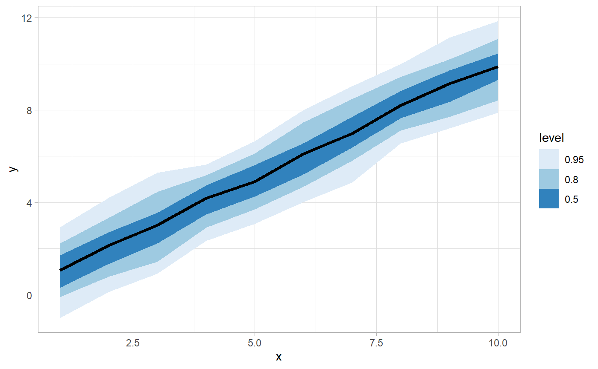

A combination of stat_summary and geom_lineribbon with sensible defaults.
While geom_lineribbon is intended for use on data frames that have already been summarized using
a point_interval function, stat_lineribbon is intended for use directly on data
frames of samples, and will perform the summarization using a point_interval function.
stat_lineribbon(mapping = NULL, data = NULL, geom = "lineribbon", position = "identity", ..., point.interval = median_qi, fun.data = point.interval, .prob = c(0.5, 0.8, 0.95), fun.args = list(), na.rm = FALSE, show.legend = NA, inherit.aes = TRUE)
| mapping | The aesthetic mapping, usually constructed with
|
|---|---|
| data | A layer specific dataset - only needed if you want to override the plot defaults. |
| geom | Use to override the default connection between
|
| position | The position adjustment to use for overlapping points on this layer. |
| ... | Other arguments passed to |
| point.interval | Alias for |
| fun.data | A function that is given a vector and should return a data frame with variables |
| .prob | The |
| fun.args | Other optional arguments passed to |
| na.rm | If |
| show.legend | Should this layer be included in the legends? |
| inherit.aes | If |
See geom_lineribbon for the geom version, intended for use on estimates/intervals that have
already been summarized using a point_interval function. See stat_pointinterval /
stat_pointintervalh for a similar stat intended for point estimates and intervals.
library(dplyr) library(ggplot2) data_frame(x = 1:10) %>% group_by_all() %>% do(data_frame(y = rnorm(100, .$x))) %>% ggplot(aes(x = x, y = y)) + stat_lineribbon() + scale_fill_brewer()